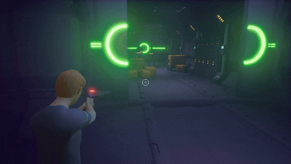

1. Controller & Machine à États C++

- Machine à états finis (FSM) C++ pour le contrôle précis du personnage (Course, Saut, Roulade, Tir).
- Inertie et collisions sur mesure pour reproduire la sensation de gameplay cinématique original.
- Verrouillage dynamique des entrées joueur lors des transitions d'animations.